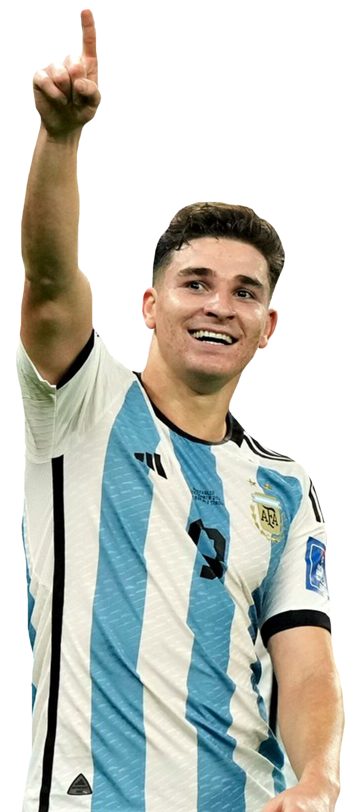
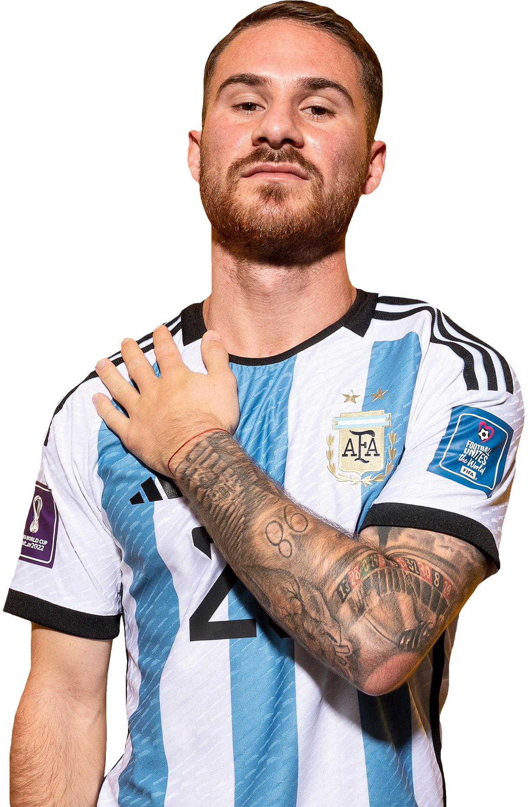
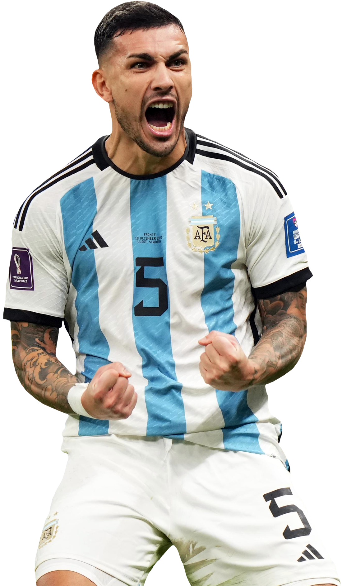
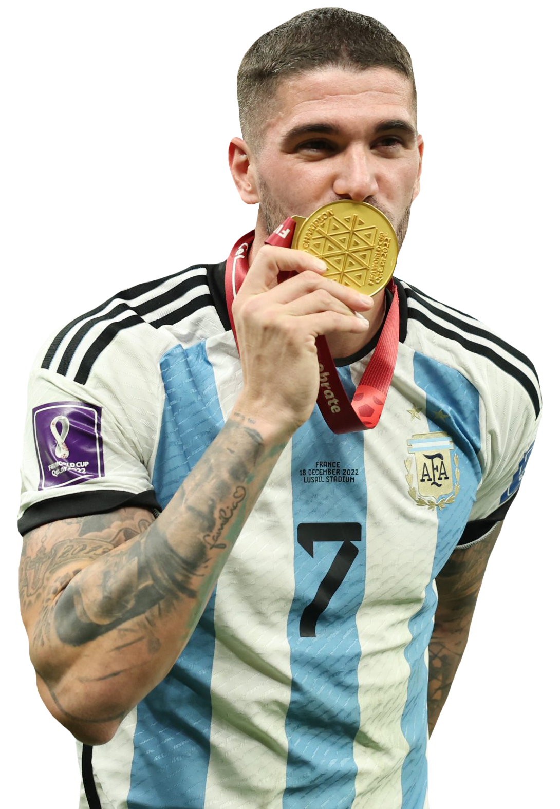
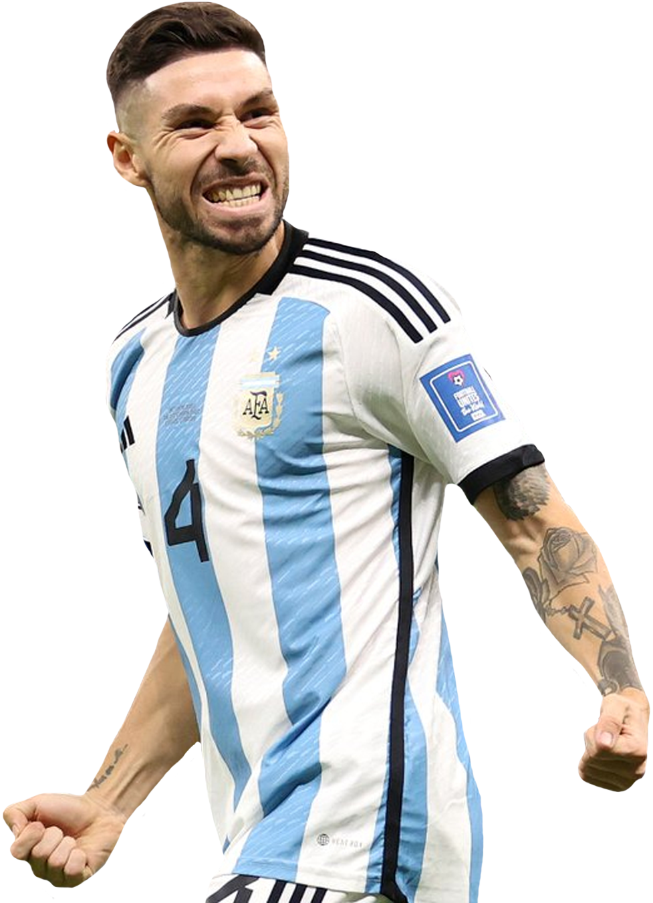
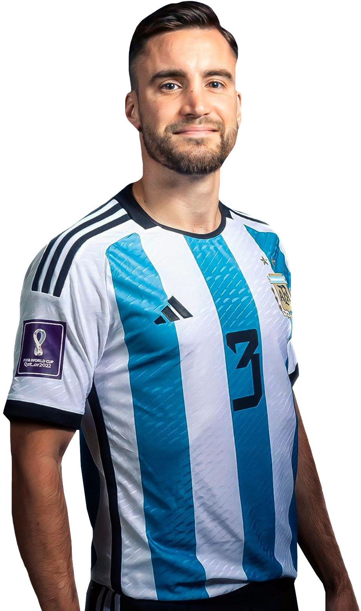
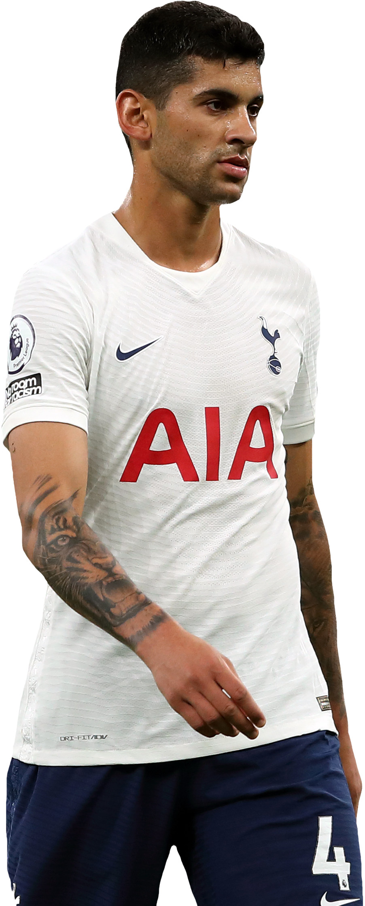
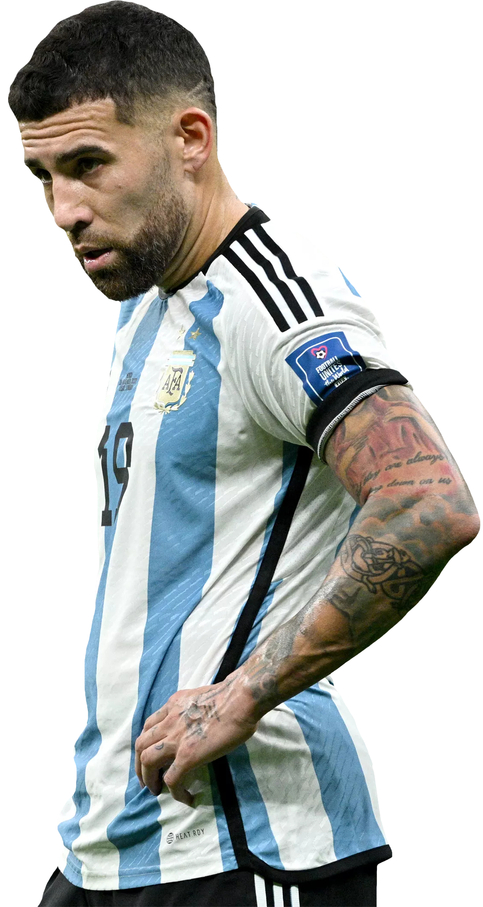
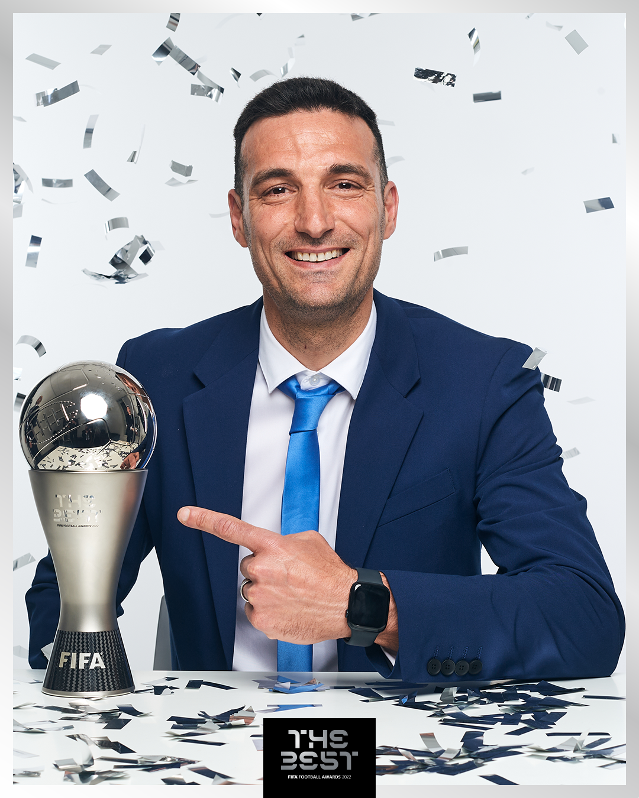

"Elijo Creer"
"Creo que llego en un momento capacitado para aceptar este desafio"
Exploring the World of Scaloni: Tactical analysis, fresh news and passion for the Argentine team. Join this football journey and discover football from a new perspective
Roar of Passions: The Argentine National Team - Unveiling the Spirit of Our Warriors Welcome to an exhilarating journey where the magic of football meets the courage of those who proudly wear the jersey of the Argentine National Team. In this expedition, we'll delve into the stories and feats of our warriors, men who have forged their legacy on the green pitch and turned each match into an unforgettable episode. We are here to introduce you to the architects of this saga, those who have dedicated their lives to representing the colors of our beloved Argentina. In Roar of Passions: The Argentine National Team, you'll discover the essence of each player, their unique skills, their bravery on the field, and the unbreakable bond they share with the fans. Get ready to witness the magic of these athletes who carry the dreams of a nation on their shoulders. In every pass, every dribble, and every goal, you'll find the pure expression of Argentine passion. Are you ready to immerse yourself in the roar of our passions? Let's journey together to unveil the spirit of the Argentine National Team!
Lionel Messi

Lionel Messi, the unparalleled football maestro, now illuminates the pitch with his magic at Inter Miami. His sublime skills, visionary play, and unwavering commitment to excellence continue to inspire teammates, setting an indomitable standard. Messi's presence at Inter Miami marks a new chapter in his illustrious career, promising electrifying performances and goals that will resonate in the history of the sport. Notably, Messi showcased his brilliance on the global stage, leaving an indelible mark during the World Cup.
Angel Di Maria

Ángel Di María, virtuoso of speed and artistry, unfolds his prowess in the dynamic setting of Benfica. His unpredictable runs, bold elegance, and tireless tenacity make him a dynamic force in Benfica's attack. Di María's skills and experience contribute to Benfica's pursuit of excellence, adding a touch of brilliance to their ambitious goals in both domestic and international competitions. Di María notably stood out on the grand stage of the World Cup, showcasing his extraordinary talents.
Julian Alvares
Julián Álvarez, the emerging gem from River Plate, dazzles with youthful energy and a natural goal-scoring instinct. His determination epitomizes the aspirations of a new generation, embodying the future of Argentine football. Currently shining at Manchester City, where his star continues to ascend, Álvarez not only promises a vibrant future for himself but also an exciting chapter for Argentine football and its passionate followers.
Alexis Mac Allister
Alexis Mac Allister, the playmaking magician, enchants with visionary passes and creative flair at Liverpool. His ability to unlock defenses and sculpt opportunities adds a layer of enchantment to the team's attacking endeavors in the English Premier League. Mac Allister's talents were on display during the World Cup, and now he continues to weave his magic in the highly competitive English football landscape.
Leandro Paredes
Leandro Paredes, the midfield maestro, orchestrates play with metronomic precision at AS Roma. His visionary passes and leadership abilities set the rhythm for the team's movements. Paredes, a standout performer in the World Cup, brings his expertise to Roma, contributing to their pursuit of excellence on both domestic and international fronts.
Rodrigo De Paul
Rodrigo De Paul, the creative dynamo, injects verve into the team's play at Atlético Madrid. His inventive flair and dynamic ball control ignite sparks of creativity, turning matches into canvases of artistic expression. De Paul, who shone in the World Cup, continues to dazzle with his versatility and attacking prowess in La Liga.
Gonzalo Montiel
Gonzalo Montiel, the defensive dynamo, epitomizes versatility and solidity at Nottingham Forest. His adept defensive skills and overlapping runs contribute both defensively and offensively, embodying the modern full-back. Montiel, a key figure in the World Cup, continues to showcase his relentless work rate and unwavering commitment, fortifying Nottingham Forest's balance on all fronts. Notably, Montiel's indelible mark on history includes stepping up to take and successfully convert the crucial penalty that secured our World Cup victory.
Nicolas Tagliafico
Nicolás Tagliafico, the tenacious defender, battles relentlessly in every inch of the field at Lyon. His tenacity and unwavering commitment make him a defensive stalwart, standing firm against opposition onslaughts and contributing both defensively and offensively. Tagliafico, a prominent figure in the World Cup, carries his valor and defensive prowess to Lyon, adding resilience to their pursuit of excellence in domestic and international competitions.
Cristian "Cuti" Romero
Cristian "Cuti" Romero, the defensive wall, fortifies the backline with discipline and tactical acumen at Tottenham Hotspur. His resilience creates an impregnable defense, instilling confidence and thwarting adversary onslaughts. Romero, a linchpin in the World Cup triumph, continues to showcase his defensive prowess, contributing to Tottenham's quest for excellence in both domestic and international competitions.
Nicolas Otamendi
Nicolás Otamendi, an indomitable force in defense, fearlessly tackles challenges at Benfica. His aerial prowess and unwavering loyalty make him a defensive linchpin, inspiring confidence and unity within the team. Otamendi, a formidable presence in the World Cup, brings his experience and tenacity to Benfica, contributing to their pursuit of excellence in both domestic and international football.
Emiliano "dibu" Martínez

Emiliano "Dibu" Martínez, the steadfast guardian at Aston Villa, orchestrated a flawless World Cup campaign, culminating in an iconic save at the 122nd minute a defining moment in his storied career. This pivotal intervention secured a historic triumph for Argentina, underscoring Martínez's technical brilliance and unshakeable mental fortitude. His acrobatics and composure, showcased throughout the tournament, elevate him as a linchpin in Aston Villa's defensive strategy. The 122nd-minute save, etched in football lore, symbolizes Dibu's unwavering commitment to excellence and stands as a lasting testament to his goalkeeping mastery on both domestic and international stages.
Lionel Scaloni
Lionel Scaloni, the astute architect at the helm of Argentina's resurgence, embodies a fusion of tactical brilliance, unwavering resilience, and indomitable courage. Steering the national team with a visionary approach, Scaloni's tactical acumen shone brightly, masterfully orchestrating a triumphant journey, crowned by World Cup glory. His leadership is a canvas painted with values resilience through adversity, unity in diversity, and an unyielding commitment to excellence. Criticized in the early stages, Scaloni's unwavering belief in his vision and tactical prowess silenced skeptics, propelling Argentina to new heights. The scars of criticism transformed into badges of honor as he led with courage, proving that victory emerges not only from talent but also from tenacity and strategic brilliance. In Scaloni, Argentina found not just a coach but a symbol of fortitude, a testament to the power of conviction, and a strategic genius who molded adversity into triumph.